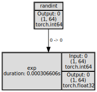
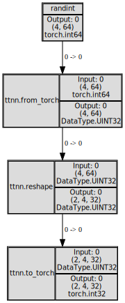
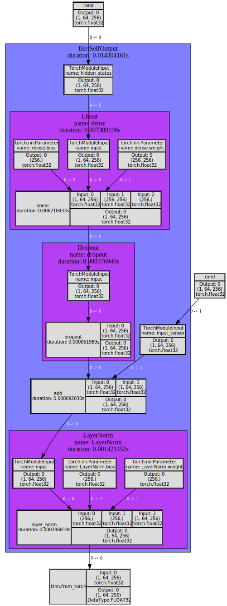
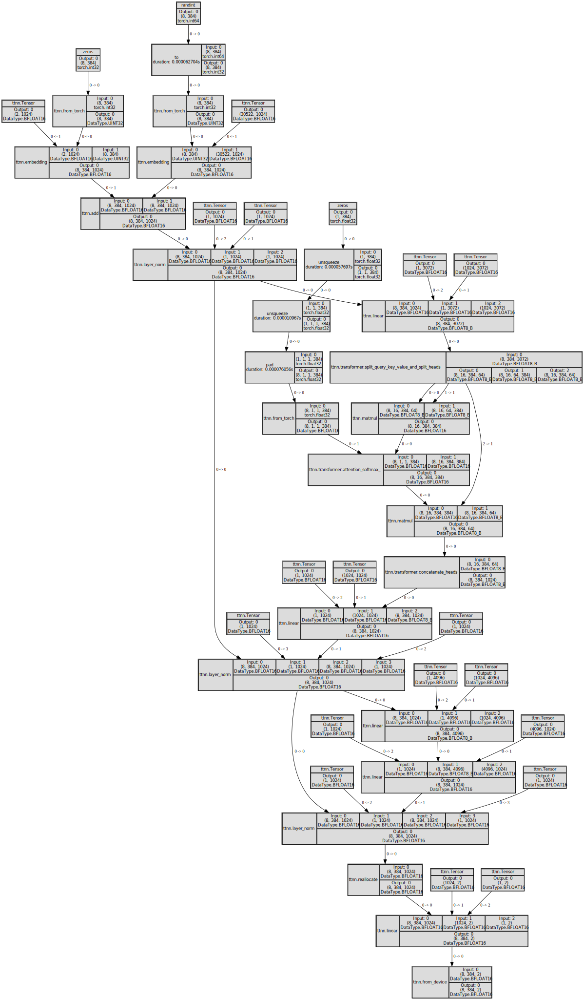

Tracing ttnn operations and torch modules/functions
[1]:
import torch
import transformers
import ttnn
from ttnn.tracer import trace, visualize
[2]:
transformers.logging.set_verbosity_error()
Trace torch functions
[3]:
with trace():
tensor = torch.randint(0, 100, (1, 64))
tensor = torch.exp(tensor)
visualize(tensor)
[3]:

Trace torch functions and ttnn operations
[4]:
with trace():
tensor = torch.randint(0, 100, (4, 64))
tensor = ttnn.from_torch(tensor)
tensor = ttnn.reshape(tensor, (2, 4, 32))
tensor = ttnn.to_torch(tensor)
visualize(tensor)
[4]:

Trace torch functions, torch modules and ttnn operations
[5]:
model_name = "google/bert_uncased_L-4_H-256_A-4"
config = transformers.BertConfig.from_pretrained(model_name)
model = transformers.models.bert.modeling_bert.BertSelfOutput(config).eval()
with trace():
hidden_states = torch.rand((1, 64, config.hidden_size))
input_tensor = torch.rand((1, 64, config.hidden_size))
hidden_states = model(hidden_states, input_tensor)
output = ttnn.from_torch(hidden_states)
visualize(output)
[5]:

Trace models written using ttnn
[6]:
device = ttnn.open_device(device_id=0, l1_small_size=8192)
Metal | INFO | Initializing device 0
Device | INFO | Opening user mode device driver
2024-02-07 19:43:59.074 | INFO | SiliconDriver - Detected 1 PCI device : {0}
2024-02-07 19:43:59.085 | WARNING | SiliconDriver - init_detect_tt_device_numanodes(): Could not determine NumaNodeSet for TT device (physical_device_id: 0 pci_bus_id: 0000:00:08.0)
2024-02-07 19:43:59.085 | WARNING | SiliconDriver - Could not find NumaNodeSet for TT Device (physical_device_id: 0 pci_bus_id: 0000:00:08.0)
2024-02-07 19:43:59.086 | WARNING | SiliconDriver - bind_area_memory_nodeset(): Unable to determine TT Device to NumaNode mapping for physical_device_id: 0. Skipping membind.
---- ttSiliconDevice::init_hugepage: bind_area_to_memory_nodeset() failed (physical_device_id: 0 ch: 0). Hugepage allocation is not on NumaNode matching TT Device. Side-Effect is decreased Device->Host perf (Issue #893).
Metal | INFO | AI CLK for device 0 is: 1202 MHz
[7]:
from models.demos.bert.tt import ttnn_bert
from models.demos.bert.tt import ttnn_optimized_bert
from ttnn.model_preprocessing import preprocess_model_parameters
def ttnn_bert(bert):
model_name = "phiyodr/bert-large-finetuned-squad2"
config = transformers.BertConfig.from_pretrained(model_name)
config.num_hidden_layers = 1
batch_size = 8
sequence_size = 384
parameters = preprocess_model_parameters(
initialize_model=lambda: transformers.BertForQuestionAnswering.from_pretrained(
model_name, config=config
).eval(),
custom_preprocessor=bert.custom_preprocessor,
device=device,
)
with trace():
input_ids = torch.randint(0, config.vocab_size, (batch_size, sequence_size)).to(torch.int32)
torch_token_type_ids = torch.zeros((batch_size, sequence_size), dtype=torch.int32)
torch_position_ids = torch.zeros((batch_size, sequence_size), dtype=torch.int32)
torch_attention_mask = torch.zeros(1, sequence_size) if bert == ttnn_optimized_bert else None
ttnn_bert_inputs = bert.preprocess_inputs(
input_ids,
torch_token_type_ids,
torch_position_ids,
torch_attention_mask,
device=device,
)
output = bert.bert_for_question_answering(
config,
*ttnn_bert_inputs,
parameters=parameters,
)
output = ttnn.from_device(output)
return visualize(output)
[8]:
ttnn_bert(ttnn_optimized_bert)
2024-02-07 19:44:02.032 | INFO | ttnn.model_preprocessing:preprocess_model_parameters:338 - Moving model weights to device
2024-02-07 19:44:02.054 | INFO | ttnn.model_preprocessing:preprocess_model_parameters:340 - Moved model weights to device
[8]:

[9]:
ttnn.close_device(device)
Metal | INFO | Closing device 0
[ ]: